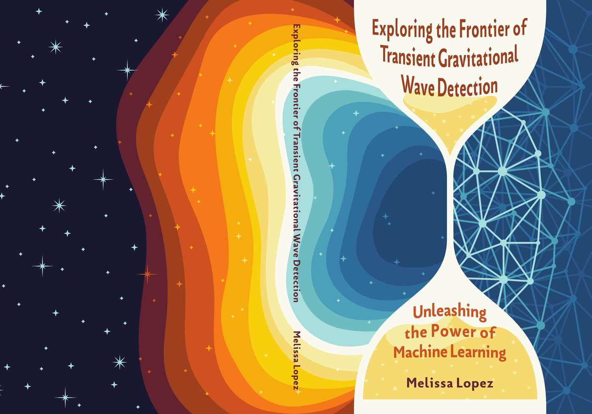
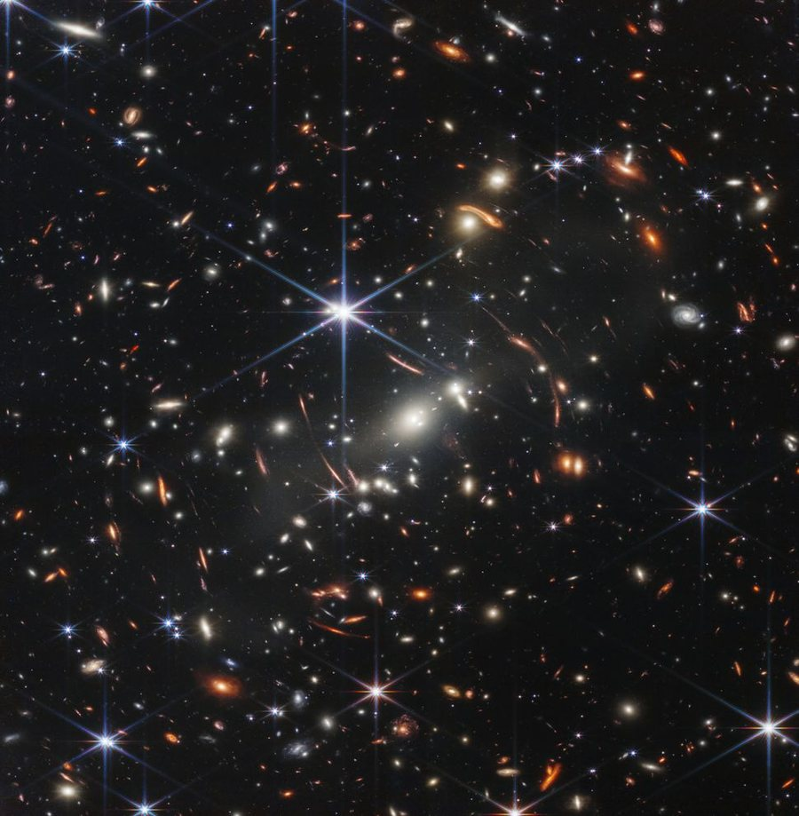
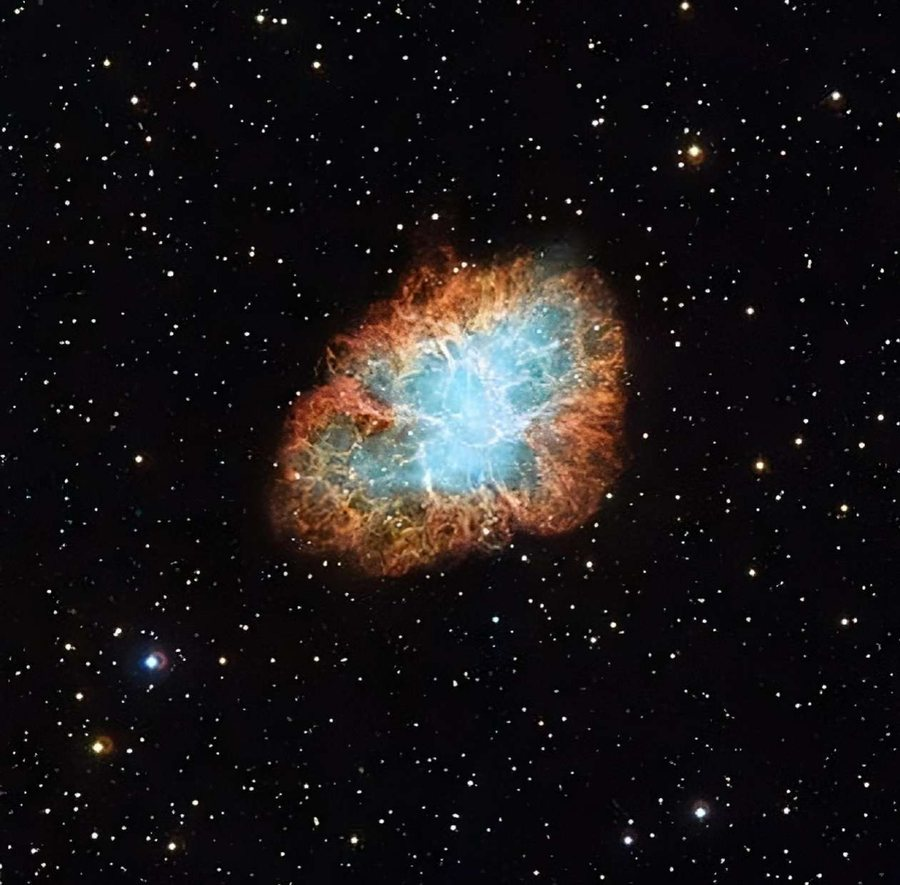
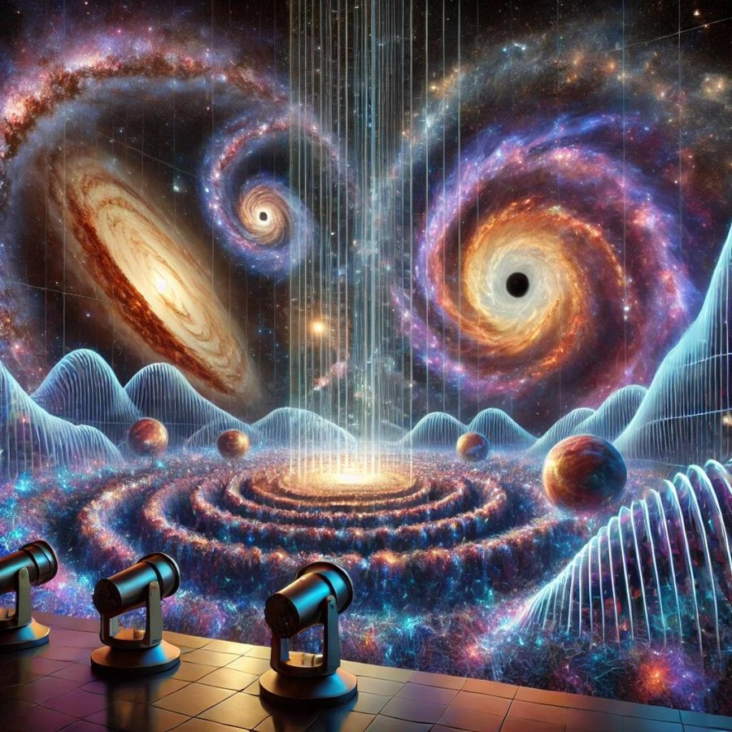
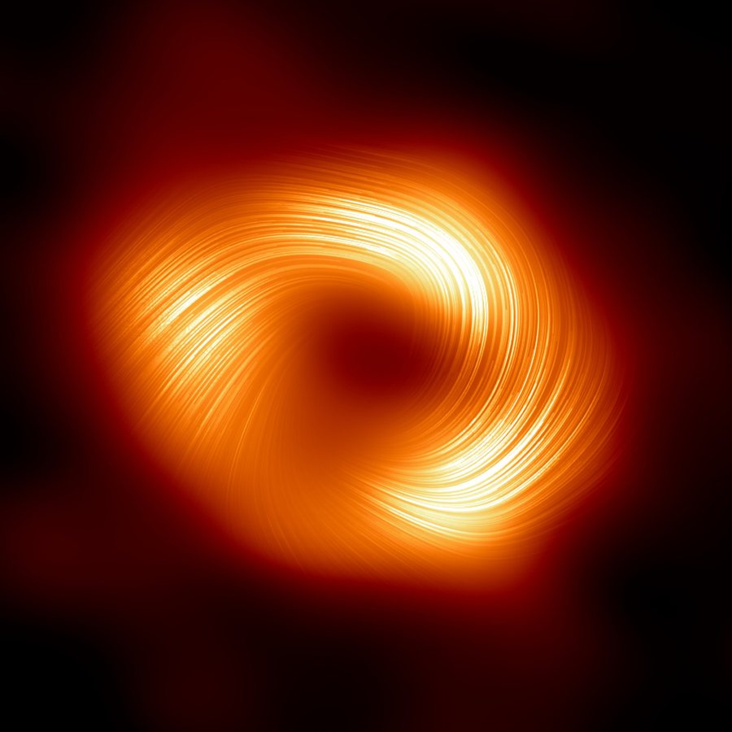

I teach machines about space-time.
My name is Melissa Lopez. I am from Buenos Aires, Argentina, and I was raised in Valencia, Spain.
I did a four-year BSc in Physics at the University of Valencia (2018), where my BSc thesis applied data-science techniques to gravitational-wave data analysis. I then completed an MSc in Data Science for Decision Making at Maastricht University (2020). My MSc thesis on the cosmic microwave background was published in MNRAS.
I obtained my PhD in Physics at Utrecht University (2025), and I am now a postdoctoral researcher in the Gravitational Waves Programme at Nikhef, the Netherlands. My research focuses on building machine-learning methods that enhance gravitational-wave data analysis within the International Gravitational-Wave Observatory Network (IGWN).
On this website you can explore the things I have done so far, from research and talks to educational resources and service work for the scientific community. If you have a question or simply want to say hi, get in touch!

Cover design by Arianna Macias HontiThesis public summary
Gravity: The Invisible Architect of the Cosmos
Gravity is the weakest of the fundamental forces, and we experience it every day here on Earth. It’s so familiar that we barely notice its effects, as we can easily overcome it by lifting a single finger. However, gravity behaves very differently on a cosmic scale. The universe is a dynamic and violent place, filled with billions of stars born in chaotic and energetic environments. These stars spend their lives producing energy through nuclear fusion—a process that powers the stars—and often end in massive explosions powerful enough to destroy entire worlds. Meanwhile, here on our small home, Earth, we are far removed from these astronomical cataclysms. We are left to wonder what other worlds are dying and what new ones are being born around those distant, shining stars.

Gravity, often referred to as the invisible architect of the cosmos, plays a vital role in shaping the universe. It dictates the orbits of planets, governs the formation of stars, and binds galaxies together. As the force that holds the vast structures of the universe in place, gravity's influence is both subtle and profound. The nature of gravity has intrigued human minds since ancient times, leading to centuries of scientific research.
In the 17th century, Sir Isaac Newton revolutionized our understanding with his law of universal gravitation, which described how gravity affects objects. However, while Newton's work explained how gravity operates, the true nature of this force remained a mystery. It wasn't until the 20th century that Albert Einstein introduced the theory of general relativity, providing a unified description of gravity and paving the way for modern physics.
According to general relativity, gravity is a geometric property of space-time, the four-dimensional fabric that composes the universe. This fabric includes three dimensions of space and one of time. In this flexible fabric, matter causes space-time to curve, and this curvature dictates how objects move. For example, Earth orbits the Sun because it moves along the curved path generated by the Sun’s mass in space-time. A fascinating consequence of these curved paths is the bending of light, known as gravitational lensing. This effect is illustrated in Fig. 1, captured by the James Webb Space Telescope, where several galaxies appear to have duplicates. In this scenario, a massive object, like a galaxy, acts as a “magnifying glass,” allowing us to observe objects located behind it and causing these duplicates as a consequence.
Another consequence of general relativity is that massive astronomical objects can distort the very fabric of space-time. Imagine space-time as a lake of crystal-clear water, so transparent that you can see all the way to the bottom. When a rock is thrown into this lake, it creates ripples on the surface. In this analogy, the lake represents space-time, and the ripples are caused by astronomical cataclysm. These ripples are known as gravitational waves, and they travel across the universe at the speed of light. After millions of years, they can reach Earth, where we can now detect them.
Detecting ripples in space-time
Stars, much like humans, are born, age over incredibly long timescales, and eventually die. During their lifetimes, these massive clouds of compressed hydrogen continuously convert hydrogen into helium through a process called nuclear fusion, which generates energy. Once they exhaust their hydrogen supply, stars begin fusing heavier elements to produce energy, progressing through the periodic table until they reach iron.

At the end of their lives, very massive stars can no longer support their own weight and collapse inward. This collapse leads to a spectacular outward explosion called a supernova, one of the most powerful events in the universe. In Fig. 2, you can see one of the most famous remnants of such an explosion: the Crab Nebula, which was formed by a supernova observed nearly 1,000 years ago in 1054 CE. Even though supernovae are incredibly energetic, the gravitational waves they produce are very weak and hard to detect. Not all supernova explosions leave behind visible remnants like the Crab Nebula. What remains after a supernova depends on the original star's mass. Sometimes, a supernova leaves behind no remnant at all, while other times it forms a compact object like a neutron star or a black hole.
In astrophysics, a compact object refers to a massive celestial body that is relatively small. Supernova explosions can form either a black hole or a neutron star. A neutron star is an extremely dense, compact star composed of neutrons, while a black hole is an extremely dense, compact object that deforms space-time itself, absorbing everything that comes near it, including light. For these types of objects, the description of gravity provided by Sir Isaac Newton is no longer valid due to their extreme conditions, and we need to adopt the theory of general relativity.
In nature, stars often form in binary systems, making it common to find pairs such as binary neutron stars, binary black holes, or a neutron star and a black hole. These celestial bodies orbit each other for billions of years, and during this time, their orbits gradually shrink due to the emission of gravitational waves, which are ripples in space-time. Eventually, the two compact objects collide in an astronomical cataclysm, merging to form a larger compact object. The gravitational waves emitted from this collision travel throughout the universe for millions of years, passing by countless galaxies. As they propagate, gravitational waves, like ripples on the surface of a lake, deform space-time, including Earth and everything on it. However, we remain unaware of their effects because the distortions they cause are extremely small.
To measure gravitational waves, scientists have built several detectors forming a network: LIGO Hanford and LIGO Livingston in the USA, Virgo in Italy, and KAGRA in Japan. These extremely complex instruments, known as interferometers, have exquisite precision to be able to detect the tiny distortions caused by gravitational waves, measuring changes in distance as small as ~1/10,000th the diameter of a proton. You can think of these machines as the most precise seismographs in the world—devices that detect and record waves—but instead of measuring earthquakes caused by tectonic plate movements, they measure ripples in space-time generated by cataclysmic events like supernova explosions and the collisions of black holes or neutron stars. Due to their incredible sensitivity, these detectors can be affected by terrestrial background noise, such as electrical malfunctions, thunderstorms, or even human activity. This background noise can produce artefacts in the data, known as glitches, that mimic gravitational wave signals and hinder their detection.
In 2015, the LIGO and Virgo detectors confirmed the existence of gravitational waves from a merger of two black holes, labelled as GW150914, nearly a century after Albert Einstein predicted them in his theory of general relativity. This groundbreaking discovery was awarded the Nobel Prize in Physics in 2017, and, as of this writing, over 90 gravitational wave signals have been detected since then. The immense work of the LIGO-Virgo-KAGRA collaboration has opened a new and exciting way to listen to the symphony of the cosmos and unveil its mysteries. Future research in gravitational wave astronomy promises to deepen our understanding of the universe by probing the densest and most energetic regions of cosmic objects, which were hidden from astronomers’ sight up until now.
Exploring the frontier of gravitational wave detection
Just as the soft melody of a street musician’s flute can be drowned out by the bustling noise of the city, gravitational waves are incredibly subtle signals often masked by various sources of detector noise. Detecting a gravitational wave signal in current ground-based detectors is like finding a needle in a haystack: we capture only a few seconds of gravitational wave signals amidst approximately 1,296,000 seconds (two weeks) of detector noise.

Current searches for transient gravitational waves are like finding a needle in a haystack. These searches rely on two main approaches: modeled searches and unmodeled searches. Modeled searches compare theoretical models from general relativity to the detector data to determine if a given signal is of astronomical origin. Unmodeled searches, on the other hand, look for loud signals in the detector data with little to no prior information. However, both methods face challenges because gravitational wave detectors produce glitches that can mimic gravitational wave signals. To overcome this, both types of searches also rely on a key idea: if a signal is observed simultaneously in multiple detectors, it is more likely to have an astronomical origin.
As current ground-based detectors are upgraded, they will become more sensitive to gravitational waves. The next generation of detectors, such as the Einstein Telescope, Cosmic Explorer, and LISA, is expected to be even more sensitive, allowing us to access the full symphony of the cosmos. In this scenario, we will enter the cosmic auditorium and need to disentangle the sounds of different instruments. Each gravitational wave source, such as colliding black holes or merging neutron stars, contributes its own unique “note” to the cosmic symphony, much like individual instruments in an orchestra. As we enhance our ability to detect these faint cosmic “notes,” we will uncover the rich tapestry of events that shape our universe. However new detectors will pose new data analysis challenges.
Just as the creation of the internet revolutionized our society, the development of artificial intelligence (AI) is shaping it in profound ways every day. In recent years, we have advanced the ability of machines to learn and perceive the world around us in a manner similar to humans. This progress has led to remarkable milestones, including humanoid robots, real-time language translation, autonomous vehicles, and generative algorithms. These AI-driven technologies demonstrate the ability to analyze data and identify patterns at remarkable speeds, offering solutions and insights that were previously unattainable. As an example, in Fig. 3 we show the interpretation of the previous paragraph of DALL·E 2, an AI algorithm.
Thanks to the success of artificial intelligence (AI), especially machine learning—a branch of AI—across many fields, scientists in large physics experiments are using these algorithms to find interesting patterns in the data. Gravitational wave research is no exception. Machine learning methods are versatile and can uncover surprising patterns in the data. However, to make these methods flexible, they often become complex, making them hard to understand—a challenge known as the "black box" problem. Additionally, because machine learning algorithms learn from data, they need to be given high-quality data and meaningful features. Finally, humans are needed to evaluate how well these algorithms perform, which is not always easy, especially when discovering new patterns.
Unleashing the power of machine learning
Even though supernova explosions are among the most powerful events in the universe, the gravitational waves they produce are incredibly faint and difficult to detect. Successfully capturing these signals will give us valuable insights into the inner workings of these explosions, helping us understand how they evolve.

We know that supernovae can create black holes that are about 3 to 100 times the mass of our Sun. On the other hand, we observe supermassive black holes that can be millions of times the Sun's mass, like Sagittarius A* at the center of our Milky Way galaxy, as shown in Fig. 4. Scientists believe these giant black holes formed over time as smaller black holes merged together. This leaves us with a mystery: the missing link between smaller black holes created by supernovae and the enormous supermassive black holes. These are called intermediate black holes, which have masses between 100 and 1,000 times that of the Sun. Detecting more gravitational waves from intermediate black holes, like those from the event GW190521, could help us piece together the story of how supermassive black holes form and how they shape the galaxies around them.
Mitigating glitches
Gravitational wave detectors are incredibly complex machines made up of many optical components. These detectors have thousands of sensors that constantly monitor their condition in real time. Due to their high sensitivity, glitches lasting only a few seconds often occur in different parts of the detector and show up in the main data stream. Because we can't predict when a glitch will appear, it's crucial to understand their forms and patterns to identify them and reduce their impact on the data. However, this is a challenging task because glitches happen frequently, about once every second.
A promising way to tackle the issue of glitches in gravitational wave detectors is to categorize them based on their shapes, or "morphologies", in the main stream of the detector. By combining human expertise with machine learning algorithms that are good at finding patterns, we can better identify these glitches, which is the first step toward reducing their impact. However, there are challenges in this approach. One difficulty is determining when a glitch is absent from the data, which makes it hard and time-consuming to fully understand the results of search algorithms. Another issue is that the exact cause of a glitch is often unknown, making it challenging to find effective solutions to prevent them.
In this thesis, we address the first problem by using a generative machine learning algorithm to learn the population of one of the most abundant glitches: Blips. Blips are short lived and affect the frequencies of interest of gravitational wave searches, particularly hindering the searches of supernova and intermediate mass black holes. By creating a synthetic population of these glitches, we can improve our search algorithms in a controlled environment.
We also address the second issue using a machine learning algorithm for anomaly detection. We compress the data of auxiliary channels where these glitches are produce. By compressing this data, the algorithm can identify patterns and learn about the glitches based on their physical processes within these channels. This approach allows us to uncover unexpected patterns and gain a better understanding of the complex nature of these glitches.
Pattern recognition for intermediate-mass black holes and supernovae
Machine learning algorithms are only as effective as the data they are given. To discover interesting patterns, these algorithms require large amounts of high-quality data. So far, we have detected over 90 gravitational waves, but this number isn't sufficient to teach a machine learning algorithm what a gravitational wave looks like. Because of this limitation, we rely heavily on simulations of these astronomical events. We have a good understanding of the physics behind black hole mergers, which allows us to simulate them accurately. However, simulating a supernova explosion is much more complex. A supernova involves several forces and processes, making it difficult to model. Creating a simulation of a supernova is also extremely resource-intensive, often taking months of computation time on a supercomputer.
Machine learning algorithms are excellent at learning patterns and have a remarkable ability to generalize from them. In this thesis, we leveraged this ability by generating signals that are somewhat similar to actual supernova simulations. The key idea is that machine learning algorithms can first learn from these approximate dataset and then refine their understanding using the actual simulations. Additionally, the machine learning method learns that gravitational waves are usually detected in several detectors simultaneously.
Traditional search algorithms for intermediate-mass black holes have been refined over the last 20 years to effectively transform the stream of data from gravitational wave detectors into meaningful features. However, these search algorithms primarily rely on simulations. Machine learning algorithms, on the other hand, can learn directly from both simulations and glitches. However, without the right features, it can be very difficult for machine learning to tell the difference between real signals and noise. In this thesis, we develop a symbiotic relationship between traditional search methods and machine learning algorithms. The machine learning models learn the features generated by the traditional search algorithms, enabling them to better distinguish genuine gravitational waves from background noise.
The work in this thesis aims to enhance the detection of gravitational waves from supernovae and intermediate-mass black holes while reducing the impact of glitches. We have explored the frontiers of transient gravitational wave detection by unleashing the power of machine learning.
La gravedad: el arquitecto invisible del cosmos
La gravedad es la más débil de las fuerzas fundamentales y la experimentamos todos los días aquí en la Tierra. Es tan familiar que apenas notamos sus efectos, ya que podemos superarla fácilmente levantando un solo dedo. Sin embargo, la gravedad se comporta de manera muy diferente a escala cósmica. El universo es un lugar dinámico y violento, lleno de miles de millones de estrellas nacidas en entornos caóticos y energéticos. Estas estrellas pasan sus vidas produciendo energía a través de la fusión nuclear, un proceso que las alimenta, y a menudo terminan en explosiones masivas lo suficientemente poderosas como para destruir mundos enteros. Mientras tanto, aquí en nuestro pequeño hogar, la Tierra, estamos lejos de estas catástrofes astronómicas. Nos queda preguntarnos qué otros mundos están muriendo y cuáles están naciendo alrededor de esas estrellas distantes y brillantes.
La gravedad, a menudo referida como el arquitecto invisible del cosmos, juega un papel vital en la conformación del universo. Dicta las órbitas de los planetas, gobierna la formación de estrellas y mantiene unidas a las galaxias. Como la fuerza que sostiene las vastas estructuras del universo en su lugar, la influencia de la gravedad es tanto sutil como profunda. La naturaleza de la gravedad ha intrigado a la mente humana desde tiempos antiguos, lo que ha llevado a siglos de investigación científica.
En el siglo XVII, Sir Isaac Newton revolucionó nuestro entendimiento con su ley de gravitación universal, que describía cómo la gravedad afecta a los objetos. Sin embargo, aunque el trabajo de Newton explicaba cómo opera la gravedad, la verdadera naturaleza de esta fuerza seguía siendo un misterio. No fue hasta el siglo XX que Albert Einstein introdujo la teoría de la relatividad general, proporcionando una descripción unificada de la gravedad y allanando el camino para la física moderna.
Según la relatividad general, la gravedad es una propiedad geométrica del espacio-tiempo, el tejido de cuatro dimensiones que compone el universo. Este tejido incluye tres dimensiones de espacio y una de tiempo. En este tejido flexible, la materia provoca la curvatura del espacio-tiempo, y esta curvatura dicta cómo se mueven los objetos. Por ejemplo, la Tierra orbita alrededor del Sol porque se mueve a lo largo del camino curvado generado por la masa del Sol en el espacio-tiempo. Una consecuencia fascinante de estos caminos curvados es la curvatura de la luz, conocida como lente gravitacional. Este efecto se ilustra en la Fig. 1, capturada por el telescopio espacial James Webb, donde varias galaxias parecen tener duplicados. En este escenario, un objeto masivo, como una galaxia, actúa como una “lupa”, permitiéndonos observar objetos situados detrás de él y provocando estos duplicados como consecuencia.
Otra consecuencia de la relatividad general es que los objetos astronómicos masivos pueden distorsionar el mismo tejido del espacio-tiempo. Imagina el espacio-tiempo como un lago de agua cristalina, tan transparente que puedes ver hasta el fondo. Cuando una roca se lanza a este lago, crea ondas en la superficie. En esta analogía, el lago representa el espacio-tiempo y las ondas son causadas por una catástrofe astronómica. Estas ondas son conocidas como ondas gravitacionales y viajan a través del universo a la velocidad de la luz. Después de millones de años, pueden llegar a la Tierra, donde ahora podemos detectarlas.
Detección de ondas en el espacio-tiempo
Las estrellas, al igual que los humanos, nacen, envejecen durante escalas de tiempo increíblemente largas y eventualmente mueren. Durante sus vidas, estas enormes nubes de hidrógeno comprimido convierten continuamente hidrógeno en helio a través de un proceso llamado fusión nuclear, que genera energía. Una vez que agotan su suministro de hidrógeno, las estrellas comienzan a fusionar elementos más pesados para producir energía, progresando a través de la tabla periódica hasta que llegan al hierro.
Al final de sus vidas, las estrellas muy masivas ya no pueden soportar su propio peso y colapsan hacia adentro. Este colapso conduce a una espectacular explosión hacia afuera, llamada supernova, uno de los eventos más poderosos del universo. En la Fig. 2, puedes ver uno de los remanentes más famosos de una explosión de este tipo: la nebulosa del Cangrejo, que fue formada por una supernova observada hace casi 1,000 años en 1054 CE. A pesar de que las supernovas son increíblemente energéticas, las ondas gravitacionales que producen son muy débiles y difíciles de detectar. No todas las explosiones de supernova dejan remanentes visibles como la nebulosa del Cangrejo. Lo que queda después de una supernova depende de la masa original de la estrella. A veces, una supernova no deja ningún remanente, mientras que otras veces forma un objeto compacto como una estrella de neutrones o un agujero negro.
En astrofísica, un objeto compacto se refiere a un cuerpo celeste masivo que es relativamente pequeño. Las explosiones de supernovas pueden formar un agujero negro o una estrella de neutrones. Una estrella de neutrones es una estrella extremadamente densa y compacta compuesta por neutrones, mientras que un agujero negro es un objeto extremadamente denso y compacto que deforma el espacio-tiempo en sí mismo, absorbiendo todo lo que se acerca a él, incluida la luz. Para este tipo de objetos, la descripción de la gravedad proporcionada por Sir Isaac Newton ya no es válida debido a sus condiciones extremas, y necesitamos adoptar la teoría de la relatividad general.
En la naturaleza, las estrellas a menudo se forman en sistemas binarios, por lo que es común encontrar pares como estrellas de neutrones binarias, agujeros negros binarios o una estrella de neutrones y un agujero negro. Estos cuerpos celestes orbitan entre sí durante miles de millones de años y, durante este tiempo, sus órbitas se encogen gradualmente debido a la emisión de ondas gravitacionales, que son ondas en el espacio-tiempo. Eventualmente, los dos objetos compactos colisionan en una catástrofe astronómica, fusionándose para formar un objeto compacto más grande. Las ondas gravitacionales emitidas por esta colisión viajan por todo el universo durante millones de años, pasando por innumerables galaxias. A medida que se propagan, las ondas gravitacionales, como ondas en la superficie de un lago, deforman el espacio-tiempo, incluida la Tierra y todo lo que hay en ella. Sin embargo, no somos conscientes de sus efectos porque las distorsiones que causan son extremadamente pequeñas.
Para medir las ondas gravitacionales, los científicos han construido varios detectores que forman una red: LIGO Hanford y LIGO Livingston en los EE.UU., Virgo en Italia y KAGRA en Japón. Estos instrumentos extremadamente complejos, conocidos como interferómetros, tienen una precisión exquisita para poder detectar las diminutas distorsiones causadas por las ondas gravitacionales, midiendo cambios en la distancia tan pequeños como ~1/10,000 del diámetro de un protón. Puedes pensar en estas máquinas como los sismógrafos más precisos del mundo, dispositivos que detectan y registran ondas, pero en lugar de medir terremotos causados por el movimiento de las placas tectónicas, miden ondas en el espacio-tiempo generadas por eventos catastróficos como explosiones de supernovas y colisiones de agujeros negros o estrellas de neutrones. Debido a su increíble sensibilidad, estos detectores pueden verse afectados por el ruido de fondo terrestre, como fallos eléctricos, tormentas eléctricas o incluso actividades humanas. Este ruido de fondo puede producir artefactos en los datos, conocidos como glitches, que pueden imitar las señales de ondas gravitacionales y dificultar su detección.
En 2015, los detectores LIGO y Virgo confirmaron la existencia de ondas gravitacionales provenientes de la fusión de dos agujeros negros, etiquetadas como GW150914, casi un siglo después de que Albert Einstein las predijera en su teoría de la relatividad general. Este descubrimiento revolucionario fue galardonado con el Premio Nobel de Física en 2017, y, hasta la fecha de este escrito, se han detectado más de 90 señales de ondas gravitacionales desde entonces. El inmenso trabajo de la colaboración LIGO-Virgo-KAGRA ha abierto una nueva y emocionante forma de escuchar la sinfonía del cosmos y revelar sus misterios. La investigación futura en astronomía de ondas gravitacionales promete profundizar nuestra comprensión del universo al sondear las regiones más densas y energéticas de los objetos cósmicos, que hasta ahora habían estado ocultas a la vista de los astrónomos.
Explorando la frontera de la detección de ondas gravitacionales
Así como la suave melodía de una flauta de un músico callejero puede ser ahogada por el bullicioso ruido de la ciudad, las ondas gravitacionales son señales increíblemente sutiles que a menudo están enmascaradas por diversas fuentes de ruido de los detectores. Detectar una señal de onda gravitacional en los detectores terrestres actuales es como encontrar una aguja en un pajar: capturamos solo unos pocos segundos de señales de ondas gravitacionales entre aproximadamente 1.296.000 segundos (dos semanas) de ruido de detector.
Las búsquedas actuales de ondas gravitacionales transitorias son como encontrar una aguja en un pajar. Estas búsquedas se basan en dos enfoques principales: búsquedas modeladas y búsquedas no modeladas. Las búsquedas modeladas comparan modelos teóricos de la relatividad general con los datos del detector para determinar si una señal dada tiene un origen astronómico. Las búsquedas no modeladas, por otro lado, buscan señales fuertes en los datos del detector con poca o ninguna información previa. Sin embargo, ambos métodos enfrentan desafíos porque los detectores de ondas gravitacionales producen glitches que pueden imitar las señales de ondas gravitacionales. Para superar esto, ambos tipos de búsquedas también se basan en una idea clave: si una señal se observa simultáneamente en múltiples detectores, es más probable que tenga un origen astronómico.
A medida que los detectores terrestres actuales se actualicen, serán más sensibles a las ondas gravitacionales. Se espera que la próxima generación de detectores, como el Telescopio Einstein, Cosmic Explorer y LISA, sea aún más sensible, lo que nos permitirá acceder a la sinfonía completa del cosmos. En este escenario, entraremos en el auditorio cósmico y necesitaremos desentrañar los sonidos de diferentes instrumentos. Cada fuente de onda gravitacional, como los agujeros negros en colisión o las estrellas de neutrones en fusión, contribuye con su propia “nota” única a la sinfonía cósmica, al igual que los instrumentos individuales en una orquesta. A medida que mejoramos nuestra capacidad para detectar estas débiles “notas” cósmicas, descubriremos el rico tapiz de eventos que dan forma a nuestro universo. Sin embargo, los nuevos detectores plantearán nuevos desafíos para el análisis de datos.
Así como la creación de internet revolucionó nuestra sociedad, el desarrollo de la inteligencia artificial (IA) la está moldeando de maneras profundas cada día. En los últimos años, hemos mejorado la capacidad de las máquinas para aprender y percibir el mundo que nos rodea de manera similar a los humanos. Este progreso ha llevado a hitos notables, incluidos robots humanoides, traducción de idiomas en tiempo real, vehículos autónomos y algoritmos generativos. Estas tecnologías impulsadas por IA demuestran la capacidad de analizar datos e identificar patrones a velocidades notables, ofreciendo soluciones e ideas que antes eran inalcanzables. Como ejemplo, en la Fig. 3 mostramos la interpretación del párrafo anterior de DALL·E 2, un algoritmo de IA.
Gracias al éxito de la inteligencia artificial (IA), especialmente del aprendizaje automático, un subcampo de la IA, en muchos campos, los científicos de grandes experimentos de física están utilizando estos algoritmos para encontrar patrones interesantes en los datos. La investigación de ondas gravitacionales no es una excepción. Los métodos de aprendizaje automático son versátiles y pueden descubrir patrones sorprendentes en los datos. Sin embargo, para hacer estos métodos flexibles, a menudo se vuelven complejos, lo que los hace difíciles de entender, un desafío conocido como el problema de la "caja negra". Además, dado que los algoritmos de aprendizaje automático aprenden de los datos, necesitan recibir datos de alta calidad y características significativas. Finalmente, se necesita la intervención humana para evaluar el rendimiento de estos algoritmos, lo cual no siempre es fácil, especialmente cuando se descubren nuevos patrones.
Liberando el poder del aprendizaje automático
Aunque las explosiones de supernovas son uno de los eventos más poderosos del universo, las ondas gravitacionales que producen son increíblemente débiles y difíciles de detectar. Capturar con éxito estas señales nos brindará información valiosa sobre el funcionamiento interno de estas explosiones, ayudándonos a comprender cómo evolucionan.
Sabemos que las supernovas pueden crear agujeros negros que son aproximadamente de 3 a 100 veces la masa de nuestro Sol. Por otro lado, observamos agujeros negros supermasivos que pueden tener millones de veces la masa del Sol, como Sagitario A* en el centro de nuestra galaxia, la Vía Láctea, como se muestra en la Fig. 4. Los científicos creen que estos agujeros negros gigantes se formaron con el tiempo a medida que los agujeros negros más pequeños se fusionaban entre sí. Esto nos deja con un misterio: el eslabón perdido entre los agujeros negros más pequeños creados por supernovas y los enormes agujeros negros supermasivos. Estos se denominan agujeros negros intermedios, que tienen masas de entre 100 y 1,000 veces la del Sol. Detectar más ondas gravitacionales de agujeros negros intermedios, como las del evento GW190521, podría ayudarnos a reconstruir la historia de cómo se forman los agujeros negros supermasivos y cómo influyen en las galaxias que los rodean.
Mitigación de glitches
Los detectores de ondas gravitacionales son máquinas increíblemente complejas formadas por muchos componentes ópticos. Estos detectores tienen miles de sensores que monitorean constantemente su estado en tiempo real. Debido a su alta sensibilidad, a menudo ocurren glitches que duran solo unos segundos en diferentes partes del detector y aparecen en el flujo de datos principal. Debido a que no podemos predecir cuándo aparecerá un glitch, es crucial comprender sus formas y patrones para identificarlos y reducir su impacto en los datos. Sin embargo, esta es una tarea desafiante porque los glitches ocurren con frecuencia, aproximadamente una vez por segundo.
Una forma prometedora de abordar el problema de los glitches en los detectores de ondas gravitacionales es categorizarlos según sus formas o "morfologías" en el flujo principal del detector. Al combinar la experiencia humana con algoritmos de aprendizaje automático que son buenos para encontrar patrones, podemos identificar mejor estos glitches, que es el primer paso para reducir su impacto. Sin embargo, hay desafíos en este enfoque. Una dificultad es determinar cuándo un glitch está ausente en los datos, lo que hace que sea difícil y requiera mucho tiempo comprender completamente los resultados de los algoritmos de búsqueda. Otro problema es que a menudo se desconoce la causa exacta de un glitch, lo que dificulta encontrar soluciones efectivas para prevenirlos.
En esta tesis, abordamos el primer problema utilizando un algoritmo de aprendizaje automático generativo para aprender la población de uno de los glitches más abundantes: Blips. Los Blips tienen una vida corta y afectan las frecuencias de interés en las búsquedas de ondas gravitacionales, particularmente obstaculizando las búsquedas de supernovas y agujeros negros de masa intermedia. Al crear una población sintética de estos glitches, podemos mejorar nuestros algoritmos de búsqueda en un entorno controlado.
También abordamos el segundo problema utilizando un algoritmo de aprendizaje automático para la detección de anomalías. Comprimimos los datos de los canales auxiliares donde se producen estos glitches. Al comprimir estos datos, el algoritmo puede identificar patrones y aprender sobre los glitches basándose en sus procesos físicos dentro de estos canales. Este enfoque nos permite descubrir patrones inesperados y obtener una mejor comprensión de la naturaleza compleja de estos glitches.
Reconocimiento de patrones para agujeros negros de masa intermedia y supernovas
Los algoritmos de aprendizaje automático son solo tan efectivos como los datos que reciben. Para descubrir patrones interesantes, estos algoritmos requieren grandes cantidades de datos de alta calidad. Hasta ahora, hemos detectado más de 90 ondas gravitacionales, pero este número no es suficiente para enseñar a un algoritmo de aprendizaje automático cómo se ve una onda gravitacional. Debido a esta limitación, dependemos en gran medida de simulaciones de estos eventos astronómicos. Tenemos una buena comprensión de la física detrás de las fusiones de agujeros negros, lo que nos permite simularlas con precisión. Sin embargo, simular una explosión de supernova es mucho más complejo. Una supernova involucra varias fuerzas y procesos, lo que dificulta su modelado. Crear una simulación de una supernova también es extremadamente intensivo en recursos, a menudo requiere meses de tiempo de computación en una supercomputadora.
Los algoritmos de aprendizaje automático son excelentes para aprender patrones y tienen una notable capacidad para generalizar a partir de ellos. En esta tesis, aprovechamos esta capacidad generando señales que son algo similares a las simulaciones reales de supernovas. La idea clave es que los algoritmos de aprendizaje automático pueden aprender primero de estos conjuntos de datos aproximados y luego refinar su comprensión utilizando las simulaciones reales. Además, el método de aprendizaje automático aprende que las ondas gravitacionales suelen detectarse en varios detectores simultáneamente.
Los algoritmos de búsqueda tradicionales para agujeros negros de masa intermedia se han refinado durante los últimos 20 años para transformar eficazmente el flujo de datos de los detectores de ondas gravitacionales en características significativas. Sin embargo, estos algoritmos de búsqueda dependen principalmente de las simulaciones. Los algoritmos de aprendizaje automático, por otro lado, pueden aprender directamente de las simulaciones y de los glitches. Sin embargo, sin las características adecuadas, puede ser muy difícil para el aprendizaje automático distinguir entre señales reales y ruido. En esta tesis, desarrollamos una relación simbiótica entre los métodos de búsqueda tradicionales y los algoritmos de aprendizaje automático. Los modelos de aprendizaje automático aprenden las características generadas por los algoritmos de búsqueda tradicionales, lo que les permite distinguir mejor las ondas gravitacionales genuinas del ruido de fondo.
El trabajo en esta tesis tiene como objetivo mejorar la detección de ondas gravitacionales de supernovas y agujeros negros de masa intermedia, al mismo tiempo que se reduce el impacto de fallos. Hemos explorado las fronteras de la detección de ondas gravitacionales transitorias aprovechando el poder del aprendizaje automático.
Zwaartekracht: De Onzichtbare Architect van het Universum
Zwaartekracht is de zwakste van de fundamentele krachten, en we ervaren het elke dag hier op aarde. Het is zo vertrouwd dat we de effecten ervan nauwelijks opmerken, omdat we het gemakkelijk kunnen overwinnen door slechts één vinger op te tillen. Echter, op kosmische schaal gedraagt zwaartekracht zich heel anders. Het universum is een dynamische en woeste plek, gevuld met miljarden sterren die geboren worden in chaotische en energieke omgevingen. Deze sterren brengen hun leven door met het produceren van energie via kernfusie — een proces dat de sterren aandrijft — en eindigen vaak in massale explosies die krachtig genoeg zijn om hele werelden te vernietigen. Ondertussen zijn we hier op onze kleine thuisplaneet, de aarde, ver verwijderd van deze astronomische catastrofes. We vragen ons af welke andere werelden sterven en welke nieuwe worden geboren rond die verre, stralende sterren.
Zwaartekracht, vaak de onzichtbare architect van het universum genoemd, speelt een cruciale rol in het vormgeven van het universum. Het dicteert de banen van planeten, beheerst de vorming van sterren en houdt sterrenstelsels bijeen. Als de kracht die de grote structuren van het universum bij elkaar houdt, is de invloed van de zwaartekracht zowel subtiel als diepgaand. De aard van de zwaartekracht heeft de menselijke geest sinds de oudheid gefascineerd, wat heeft geleid tot eeuwen van wetenschappelijk onderzoek.
In de 17e eeuw revolutioneerde Sir Isaac Newton ons begrip met zijn wet van universele zwaartekracht, die beschreef hoe zwaartekracht objecten beïnvloedt. Echter, hoewel het werk van Newton uitlegde hoe zwaartekracht werkt, bleef de ware aard van deze kracht een mysterie. Pas in de 20e eeuw introduceerde Albert Einstein de theorie van de algemene relativiteitstheorie, die een verenigde beschrijving van zwaartekracht bood en de weg baande voor de moderne natuurkunde.
Volgens de algemene relativiteitstheorie is zwaartekracht een geometrische eigenschap van de ruimtetijd, het vierdimensionale weefsel dat het universum vormt. Dit weefsel omvat drie dimensies van ruimte en één van tijd. In dit flexibele weefsel zorgt materie ervoor dat ruimtetijd kromt, en deze kromming bepaalt hoe objecten bewegen. Bijvoorbeeld, de aarde draait om de zon omdat deze beweegt langs het kromme pad dat wordt veroorzaakt door de massa van de zon in de ruimtetijd. Een fascinerend gevolg van deze kromme paden is de buiging van licht, bekend als gravitatie-lensvorming. Dit effect wordt geïllustreerd in Fig. 1, vastgelegd door de James Webb Space Telescope, waar verschillende sterrenstelsels duplicaten lijken te hebben. In dit scenario fungeert een massief object, zoals een sterrenstelsel, als een “vergrootglas” en stelt ons in staat objecten te observeren die erachter liggen en veroorzaakt deze duplicaten als gevolg.
Een ander gevolg van de algemene relativiteitstheorie is dat massieve astronomische objecten het weefsel van de ruimtetijd zelf kunnen vervormen. Stel je de ruimtetijd voor als een meer van kristalhelder water, zo transparant dat je helemaal tot op de bodem kunt kijken. Wanneer een steen in dit meer wordt gegooid, creëert het rimpelingen op het oppervlak. In deze analogie vertegenwoordigt het meer de ruimtetijd, en de rimpelingen worden veroorzaakt door een astronomische catastrofe. Deze rimpelingen staan bekend als zwaartekrachtsgolven, en ze reizen met de snelheid van het licht door het universum. Na miljoenen jaren kunnen ze de aarde bereiken, waar we ze nu kunnen detecteren.
Het detecteren van rimpelingen in de ruimtetijd
Sterren, net als mensen, worden geboren, verouderen over ongelooflijk lange tijdschalen, en sterven uiteindelijk. Tijdens hun leven zetten deze enorme wolken van gecomprimeerd waterstof continu waterstof om in helium via een proces genaamd kernfusie, dat energie genereert. Zodra ze hun voorraad waterstof hebben uitgeput, beginnen sterren zwaardere elementen te fuseren om energie te produceren, voortschrijdend door het periodiek systeem totdat ze ijzer bereiken.
Aan het einde van hun leven kunnen zeer massieve sterren hun eigen gewicht niet meer dragen en storten ze in. Deze instorting leidt tot een spectaculaire explosie naar buiten, een supernova genaamd, een van de krachtigste gebeurtenissen in het universum. In Fig. 2 zie je een van de beroemdste overblijfselen van zo'n explosie: de Krabnevel, die werd gevormd door een supernova die bijna duizend jaar geleden in 1054 CE werd waargenomen. Hoewel supernovae ongelooflijk energiek zijn, zijn de zwaartekrachtsgolven die ze produceren zeer zwak en moeilijk te detecteren. Niet alle supernova-explosies laten zichtbare overblijfselen achter zoals de Krabnevel. Wat er na een supernova overblijft, hangt af van de massa van de oorspronkelijke ster. Soms laat een supernova helemaal geen overblijfsel achter, terwijl het andere keren een compact object vormt zoals een neutronenster of een zwart gat.
In de astrofysica verwijst een compact object naar een massief hemellichaam dat relatief klein is. Supernova-explosies kunnen ofwel een zwart gat of een neutronenster vormen. Een neutronenster is een extreem dichte, compacte ster die bestaat uit neutronen, terwijl een zwart gat een extreem dichte, compacte massa is die de ruimtetijd zelf vervormt en alles absorbeert wat in de buurt komt, inclusief licht. Voor dit soort objecten is de beschrijving van de zwaartekracht zoals gegeven door Sir Isaac Newton niet langer geldig vanwege hun extreme omstandigheden, en we moeten de theorie van de algemene relativiteit toepassen.
In de natuur vormen sterren vaak binairen systemen, waardoor het gebruikelijk is om paren te vinden zoals binaire neutronensterren, binaire zwarte gaten, of een neutronenster en een zwart gat. Deze hemellichamen draaien miljarden jaren om elkaar heen, en gedurende deze tijd krimpen hun banen geleidelijk door de emissie van zwaartekrachtsgolven. Uiteindelijk botsen de twee compacte objecten in een astronomische catastrofe en smelten ze samen om een groter compact object te vormen. De zwaartekrachtsgolven die vrijkomen bij deze botsing reizen miljoenen jaren door het universum en passeren talloze sterrenstelsels. Terwijl ze zich voortplanten, vervormen zwaartekrachtsgolven, net als rimpelingen op het oppervlak van een meer, de ruimtetijd, inclusief de aarde en alles daarop. We blijven echter onbewust van hun effecten omdat de vervormingen die ze veroorzaken extreem klein zijn.
Om zwaartekrachtsgolven te meten, hebben wetenschappers verschillende detectoren gebouwd die een netwerk vormen: LIGO Hanford en LIGO Livingston in de VS, Virgo in Italië en KAGRA in Japan. Deze extreem complexe instrumenten, bekend als interferometers, hebben een verfijnde precisie om de kleine vervormingen veroorzaakt door zwaartekrachtsgolven te detecteren, en meten veranderingen in afstand die zo klein zijn als ~1/10,000 van de diameter van een proton. Je kunt deze machines zien als de meest nauwkeurige seismografen ter wereld—apparaten die golven detecteren en registreren—maar in plaats van aardbevingen veroorzaakt door bewegingen van tektonische platen te meten, meten ze rimpelingen in de ruimtetijd die worden gegenereerd door catastrofale gebeurtenissen zoals supernova-explosies en de botsingen van zwarte gaten of neutronensterren. Vanwege hun ongelooflijke gevoeligheid kunnen deze detectoren worden beïnvloed door aardse achtergrondgeluiden, zoals elektrische storingen, onweersbuien of zelfs menselijke activiteiten. Deze achtergrondgeluiden kunnen artefacten in de gegevens veroorzaken, bekend als glitches, die zwaartekrachtsgolfsignalen kunnen nabootsen en hun detectie bemoeilijken.
In 2015 bevestigden de LIGO en Virgo detectoren het bestaan van zwaartekrachtsgolven afkomstig van de samensmelting van twee zwarte gaten, genaamd GW150914, bijna een eeuw nadat Albert Einstein ze had voorspeld in zijn theorie van de algemene relativiteit. Deze baanbrekende ontdekking werd bekroond met de Nobelprijs voor de Natuurkunde in 2017, en, op het moment van schrijven, zijn er sindsdien meer dan 90 zwaartekrachtsgolfsignalen gedetecteerd. Het immense werk van de LIGO-Virgo-KAGRA samenwerking heeft een nieuwe en spannende manier mogelijk gemaakt om te luisteren naar de symfonie van het universum en zijn mysteries te onthullen. Toekomstig onderzoek in de zwaartekrachtsgolvenastronomie belooft ons begrip van het universum te verdiepen door de dichtste en meest energieke regio's van kosmische objecten te onderzoeken, die tot nu toe verborgen waren voor astronomen.
Het verkennen van de grens van gravitatiegolven-detectie
Net zoals de zachte melodie van de fluit van een straatmuzikant kan worden overstemd door het drukke stadsgeruis, zijn zwaartekrachtsgolven ongelooflijk subtiele signalen die vaak worden gemaskeerd door verschillende bronnen van waarnemingsruis. Het detecteren van een zwaartekrachtsgolfsignaal in de huidige op de aarde gevestigde detectoren is als het zoeken naar een speld in een hooiberg: we vangen slechts enkele seconden zwaartekrachtsgolfsignalen op te midden van ongeveer 1.296.000 seconden (twee weken) aan waarnemingsruis.
Huidige zoektochten naar transiënte zwaartekrachtsgolven zijn als het zoeken naar een speld in een hooiberg. Deze zoektochten vertrouwen op twee hoofdbenaderingen: gemodelleerde zoektochten en ongemodelleerde zoektochten. Gemodelleerde zoektochten vergelijken theoretische modellen uit de algemene relativiteit met de detectorgegevens om te bepalen of een bepaald signaal een astronomische oorsprong heeft. Aan de andere kant zoeken ongemodelleerde zoektochten naar harde signalen in de detectorgegevens met weinig tot geen voorkennis. Beide methoden staan echter voor uitdagingen omdat zwaartekrachtsgolfdetectoren glitches kunnen produceren die zwaartekrachtsgolfsignalen nabootsen. Om dit te omzeilen, vertrouwen beide soorten zoektochten ook op een belangrijk idee: als een signaal tegelijkertijd in meerdere detectoren wordt waargenomen, is het waarschijnlijker dat het een astronomische oorsprong heeft.
Naarmate de huidige op de aarde gevestigde detectoren worden geüpgraded, zullen ze gevoeliger worden voor zwaartekrachtsgolven. De volgende generatie detectoren, zoals de Einstein-telescoop, Cosmic Explorer en LISA, zal naar verwachting nog gevoeliger zijn, waardoor we toegang krijgen tot de volledige symfonie van het universum. In dit scenario zullen we het kosmische auditorium betreden en moeten we de geluiden van verschillende instrumenten ontcijferen. Elke bron van zwaartekrachtsgolven, zoals botsende zwarte gaten of samensmeltende neutronensterren, draagt zijn eigen unieke “noot” bij aan de kosmische symfonie, net zoals individuele instrumenten in een orkest. Naarmate we ons vermogen verbeteren om deze zwakke kosmische “noten” te detecteren, zullen we de rijke verscheidenheid aan gebeurtenissen die ons universum vormgeven, onthullen. Nieuwe detectoren zullen echter nieuwe data-analyse-uitdagingen met zich meebrengen.
Net zoals de totstandkoming van het internet onze samenleving heeft gerevolutioneerd, vormt de ontwikkeling van kunstmatige intelligentie (AI) deze elke dag op ingrijpende wijze. In de afgelopen jaren hebben we de mogelijkheid van machines om te leren en de wereld om ons heen waar te nemen op een manier die lijkt op die van mensen, verbeterd. Deze vooruitgang heeft geleid tot opmerkelijke mijlpalen, waaronder humanoïde robots, realtime taalvertaling, autonome voertuigen en generatieve algoritmen. Deze door AI aangedreven technologieën demonstreren het vermogen om gegevens te analyseren en patronen te identificeren met verbazingwekkende snelheden, wat oplossingen en inzichten biedt die voorheen onbereikbaar waren. Als voorbeeld tonen we in Fig. 3 de interpretatie van de vorige paragraaf van DALL·E 2, een AI-algoritme.
Dankzij het succes van kunstmatige intelligentie (AI), met name machine learning—een tak van AI—in vele velden, gebruiken wetenschappers in grote fysica-experimenten deze algoritmen om interessante patronen in de gegevens te vinden. Zwaartekrachtsgolvenonderzoek is hierop geen uitzondering. Machine learning-methoden zijn veelzijdig en kunnen verrassende patronen in de gegevens onthullen. Om deze methoden echter flexibel te maken, worden ze vaak complex, waardoor ze moeilijk te begrijpen zijn—een uitdaging die bekend staat als het "black box"-probleem. Bovendien moeten machine learning-algoritmen, omdat ze leren van gegevens, worden voorzien van hoogwaardige gegevens en betekenisvolle kenmerken. Ten slotte zijn mensen nodig om te beoordelen hoe goed deze algoritmen presteren, wat niet altijd eenvoudig is, vooral niet bij het ontdekken van nieuwe patronen.
De kracht van machine learning ontketenen
Hoewel supernova-explosies tot de krachtigste gebeurtenissen in het universum behoren, zijn de zwaartekrachtsgolven die ze produceren ongelooflijk zwak en moeilijk te detecteren. Het succesvol vastleggen van deze signalen zal ons waardevolle inzichten geven in de inwendige werking van deze explosies en ons helpen begrijpen hoe ze zich ontwikkelen.
We weten dat supernovae zwarte gaten kunnen creëren die ongeveer 3 tot 100 keer de massa van onze zon hebben. Aan de andere kant observeren we supermassieve zwarte gaten die miljoenen keren de massa van de zon kunnen zijn, zoals Sagittarius A* in het centrum van onze Melkweg, zoals getoond in Fig. 4. Wetenschappers geloven dat deze gigantische zwarte gaten in de loop van de tijd zijn ontstaan doordat kleinere zwarte gaten samenkwamen. We staan voor een raadsel: de ontbrekende schakel tussen kleinere zwarte gaten die door supernovae worden gecreëerd en de enorme supermassieve zwarte gaten. Deze worden zwarte gaten met een middelmatige massa genoemd, die massa's hebben tussen 100 en 1.000 keer die van de zon. Het detecteren van meer zwaartekrachtsgolven van zwarte gaten met een middelmatige massa, zoals die van het evenement GW190521, zou ons kunnen helpen het verhaal van hoe supermassieve zwarte gaten ontstaan en hoe ze de sterrenstelsels om hen heen vormgeven, in kaart te brengen.
Het tegengaan van Glitches
Zwaartekrachtsgolfdetectoren zijn ongelooflijk complexe machines die bestaan uit veel optische componenten. Deze detectoren hebben duizenden sensoren die voortdurend hun toestand in realtime bewaken. Vanwege hun hoge gevoeligheid komen glitches die slechts enkele seconden duren vaak voor in verschillende delen van de detector en verschijnen ze in de hoofdstroom van gegevens. Omdat we niet kunnen voorspellen wanneer een glitch zal verschijnen, is het cruciaal om hun vormen en patronen te begrijpen om ze te identificeren en hun impact op de gegevens te verminderen. Dit is echter een uitdagende taak omdat glitches vaak voorkomen, ongeveer eens per seconde.
Een veelbelovende manier om het probleem van glitches in zwaartekrachtsgolfdetectoren aan te pakken, is door ze te categoriseren op basis van hun vormen, of "morfologieën", in de hoofdstroom van de detector. Door menselijke expertise te combineren met machine learning-algoritmen die goed zijn in het vinden van patronen, kunnen we deze glitches beter identificeren, wat de eerste stap is naar het verminderen van hun impact. Er zijn echter uitdagingen bij deze aanpak. Een moeilijkheid is het bepalen wanneer een glitch afwezig is in de gegevens, wat het moeilijk en tijdrovend maakt om de resultaten van zoekalgoritmen volledig te doorgronden. Een ander probleem is dat de exacte oorzaak van een glitch vaak onbekend is, waardoor het moeilijk is om effectieve oplossingen te vinden om ze te voorkomen.
In dit proefschrift pakken we het eerste probleem aan door een generatief machine learning-algoritme te gebruiken om de populatie van een van de meest voorkomende glitches te leren: Blips. Blips zijn van korte duur en beïnvloeden de frequenties die van belang zijn voor het zoeken naar zwaartekrachtsgolven, met name het zoeken naar supernovae en zwarte gaten met een middelmatige massa. Door een kunstmatige populatie van deze glitches te creëren, kunnen we onze zoekalgoritmen in een gecontroleerde omgeving verbeteren.
We pakken ook het tweede probleem aan met behulp van een machine learning-algoritme voor anomaliedetectie. We comprimeren de gegevens van hulpkanalen waar deze glitches worden geproduceerd. Door deze gegevens te comprimeren, kan het algoritme patronen identificeren en leren over de glitches op basis van hun fysieke processen binnen deze kanalen. Deze aanpak stelt ons in staat om onverwachte patronen bloot te leggen en een beter begrip te krijgen van de complexe aard van deze glitches.
Patroonherkenning voor zwarte gaten met een middelmatige massa en supernovae
Machine learning-algoritmen zijn slechts zo effectief als de gegevens die ze krijgen. Om interessante patronen te ontdekken, hebben deze algoritmen grote hoeveelheden hoogwaardige gegevens nodig. Tot nu toe hebben we meer dan 90 zwaartekrachtsgolven gedetecteerd, maar dit aantal is niet voldoende om een machine learning-algoritme te leren hoe een zwaartekrachtsgolf eruitziet. Vanwege deze beperking vertrouwen we sterk op simulaties van deze astronomische gebeurtenissen. We hebben een goed begrip van de natuurkunde achter fusies van zwarte gaten, waardoor we ze nauwkeurig kunnen simuleren. Het simuleren van een supernova-explosie is echter veel complexer. Een supernova omvat verschillende krachten en processen, wat het moeilijk maakt om te modelleren. Het maken van een simulatie van een supernova is ook extreem intensief in termen van middelen, en kost vaak maanden aan rekentijd op een supercomputer.
Machine learning-algoritmen zijn uitstekend in het leren van patronen en hebben een opmerkelijk vermogen om van daaruit te generaliseren. In dit proefschrift hebben we gebruik gemaakt van dit vermogen door signalen te genereren die enigszins lijken op feitelijke supernovasimulaties. Het belangrijkste idee is dat machine learning-algoritmen eerst kunnen leren van deze benaderde dataset en vervolgens hun begrip kunnen verfijnen met behulp van de feitelijke simulaties. Bovendien leert de machine learning-methode dat zwaartekrachtsgolven meestal in meerdere detectoren tegelijkertijd worden gedetecteerd.
Traditionele zoekalgoritmen voor zwarte gaten met een middelmatige massa zijn in de afgelopen 20 jaar verfijnd om de datastroom van zwaartekrachtsgolfdetectoren effectief om te zetten in betekenisvolle kenmerken. Deze zoekalgoritmen vertrouwen echter voornamelijk op simulaties. Machine learning-algoritmen kunnen daarentegen direct leren van zowel simulaties als glitches. Zonder de juiste kenmerken kan het echter erg moeilijk zijn voor machine learning om het verschil te zien tussen echte signalen en ruis. In dit proefschrift ontwikkelen we een symbiotische relatie tussen traditionele zoekmethoden en machine learning-algoritmen. De machine learning-modellen leren de kenmerken die door de traditionele zoekalgoritmen worden gegenereerd, waardoor ze beter in staat zijn om echte zwaartekrachtsgolven van achtergrondruis te onderscheiden.
Het werk in deze thesis is gericht op het verbeteren van de detectie van gravitatiegolven van supernova's en zwarte gaten van middelmatige massa, terwijl de impact van storingen wordt verminderd. We hebben de grenzen van de detectie van tijdelijke gravitatiegolven verkend door de kracht van machine learning te benutten.
News
- 📄
Our paper on time-domain synthesis of detector glitches with conditional GANs is out in Physical Review D.
- 🧠
Took part in the Lorentz Center workshop Accelerating Astrophysical Discovery with Foundation Models in Leiden.
- 🎤
Invited talk at the HTCondor Workshop in Lyon on early detection of binary neutron stars.
- 🚀
Joined the Gravitational Waves Programme at Nikhef. Started as guest editor of the Frontiers in Physics Research Topic “Production-ready AI for physics: algorithms in operation”, and as a EuCAIF Junior Fellow.
- 🚀
Joined the Management Committee of COST Action CA25172 AIFORIA.
- 🏆
Received an Honourable Mention for the IAU PhD Prize (Division B: Facilities, Technologies and Data Science).
- 🎤
Invited talk at the AI for Gravitational Waves Workshop at CERN.
- 🎤
Invited talk and scientific committee at the Einstein Telescope Industry Computing Workshop.
- 🚀
Elected chair of the Virgo Early Career Scientists group.
- 📄
Our chapter on simulating transient noise bursts appeared in the Springer book Gravitational Wave Science with Machine Learning.
- 🎓
Defended my PhD at Utrecht University. Read the thesis.
Research
As detectors become more sensitive, gravitational-wave data will shift from noise-dominated to signal-dominated. My goal is robust machine learning that quantifies and corrects its own biases, so it can run inside real production analyses.
Modelling detector noise
I developed gengli, an open-source generative AI tool that produces large, realistic populations of glitches. It is used within the gravitational-wave community to study how glitches affect data analysis. With my students, I also built the first data-driven framework to flag anomalous glitches.
Detecting weak and exotic signals
Combining machine learning with traditional detection statistics improves searches for intermediate-mass black hole binaries. For unmodelled sources, I showed how neural networks can search for core-collapse supernovae in real detector noise with limited training data.
Faster searches
Binary neutron star signals arrive before their light. I helped develop the first machine-learning early-warning method for these mergers, with alerts up to 100 seconds before merger, and supervised work that runs it on FPGAs to cut energy use at the detector site.
gengli
A generative AI tool that produces large, realistic populations of detector glitches. It is used within the gravitational-wave community to test how searches and parameter estimation cope with non-Gaussian noise.
pip install gengli
Synthetic binary-black-hole dataset
A ready-to-use, balanced dataset of 140,000 simulated detector segments for training and comparing machine-learning methods for gravitational-wave detection. Half contain only detector noise, half also hide a signal from merging black holes. Everything is stored in the file so the data can be regenerated exactly. Created with Narenraju Nagarajan using SAGE.
LIGO Hanford + Livingston · 2 s at 2048 Hz · whitened · HDF5
Publications
Short-author-list papers. As a member of the LIGO-Virgo-KAGRA Collaboration I am also an author of its collaboration papers.
Talks
20 invited contributions (talks, seminars, panels and lectures), 19 contributed talks, 5 posters and 3 outreach talks since 2021.
Education
I enjoy helping students take their first steps in gravitational-wave data analysis. Many of my students' projects have grown into publications.
gw_learn
A set of hands-on tutorials on gravitational-wave data analysis and machine learning, written for students and early-career researchers entering the field. They take you from real detector data to training your first models.
AIFORIA
A COST Action that brings together people working on artificial intelligence across particle, astro-, nuclear and gravitational-wave physics and cosmology. For PhD students and early-career researchers it offers training schools, hackathons and funded short research visits abroad (Short-Term Scientific Missions), and anyone can join its working groups.
I sit on its Management Committee, so feel free to ask me how to get involved.
Open student projects
Curious about gravitational waves and machine learning? These are questions I would love to explore with students at Nikhef. Every project can be shaped into a BSc or an MSc thesis. Get in touch by email.
- Detector noiseHow Gaussian is detector noise, really?Most analyses assume the noise in our detectors behaves like gentle, random static. Find out where that assumption breaks down and what it means for the signals we detect.
- Detector noiseCan we spot trouble in a detector by looking at its sensors?Each detector is watched by thousands of sensors. Use machine learning to find unusual patterns in their data and trace glitches back to their causes.
- Signal detectionCan we draw a map of all possible gravitational waves?Signals from merging black holes come in countless shapes. Teach a neural network to arrange them in a compact mathematical space (an embedding) that makes searches faster.
- Detector noiseHow do we build realistic test data for new algorithms?Before we trust a new method, we test it on simulated data with known answers, called mock data challenges. Help create realistic ones, glitches included.
- Faster searchesDo you want to help catch cosmic collisions as they happen?When neutron stars collide, telescopes need an alert within seconds. Deploy fast algorithms that turn detector data into early warnings for multi-messenger astronomy.
- Detector noiseWhat happens when a signal and a glitch arrive together?It happened with the first neutron-star merger, GW170817, where a loud glitch hid part of the signal in one detector. Study how such overlaps bias what we learn, and how to correct for them.
- Faster searchesCan we clean a glitch out of the data in seconds?Removing a glitch today can take hours of computing time. Explore fast machine-learning methods that run on GPUs to do it much more quickly.
Past student projects
- MSc · UMass DartmouthAn exploration of statistical methods in determining the Gaussianity of LIGO detector dataAshish Mathew
- MSc · Utrecht UniversityLearning auxiliary channel relationships for glitch detection using graph neural networksMees van Uden
- MSc · TU EindhovenThe impact of multiple detector glitches on binary black hole signal recoveryJohan Beilën
- BSc · Utrecht UniversityFrom real noise to realistic simulations: analysing, reconstructing and generating gravitational-wave glitchesMees de Boer · led to Phys. Rev. D 2026
- MSc · Utrecht UniversityImplementing convolutional neural networks on FPGAs for early detection of gravitational wavesAna Silva · led to Mach. Learn.: Sci. Technol. 2025
- MSc · Maastricht UniversityAnomaly detection for non-Gaussian transient noise characterisation in LIGO data using auxiliary channelsPaloma Laguarta · led to Class. Quantum Grav. 2024
- Internship · Utrecht UniversityRefining fractal dimension computation for gravitational-wave data analysisRobin van der Laag
- BSc · Maastricht UniversityTransfer learning for core-collapse supernova detection with gravitational wavesIonas Fabris
- BSc · Utrecht UniversitySparse, deep neural networks for the early-warning detection of binary neutron starsKoen van Lieshout
- BSc · Utrecht UniversityGravitational-wave signal detection with machine learningRobin van der Laag
- High school · U-TalentResearch projects (profielwerkstuk) for secondary-school students2021–2022
Teaching
- 2025–26Analysis of Big Data in Physics (BSc), Maastricht UniversityTutorial: gravitational-wave data analysis
- 2021–24Computational Aspects of Machine Learning (MSc), Utrecht UniversityTeaching assistant and lecturer: neural networks, convolutional neural networks (super TA in 2022–23)
- 2022–26Guest lectures, Utrecht UniversityFrom GANs for glitches to a machine-learning view of the Einstein Telescope era
- 2021Observational and Theoretical Cosmology (BSc), Utrecht UniversityTeaching assistant
- 2020–21Stellar Astrophysics (BSc), Utrecht UniversityTeaching assistant
- 2018–20Linear Algebra, Probability and Statistics, Numerical Mathematics (BSc), Maastricht UniversityTeaching assistant
Service
Work that keeps our collaborations and community running.
Collaboration leadership
- 2023 – nowCo-chair, Machine Learning Algorithms group, LIGO-Virgo-KAGRAOrganised the group’s sessions at the LVK meetings in Chicago (2023), Baton Rouge (2024), Barcelona (2024) and Melbourne (2025)
- 2026 – nowChair, Virgo Early Career Scientists group
- 2026 – nowMember, LVK Generative AI Task Force
- 2025Early-career representative, Virgo Steering Committee
European community
- 2026 – nowManagement Committee member, COST Action CA25172 AIFORIA
- 2026 – nowJunior Fellow, European Coalition for AI in Fundamental Physics (EuCAIF)
- 2022 – 2023Member, g2net COST Action
Editorial work and reviewing
- 2026 – nowGuest editor, Frontiers in PhysicsResearch Topic “Production-ready AI for physics: algorithms in operation”
- 2023 – nowReferee, Nature Astronomy, Physical Review D and Machine Learning: Science and Technology
- 2023 – nowBurst reviewer, LVK CollaborationReview of software for burst searches
- 2021 – nowPaper reviewer, LVK CollaborationInternal review of short-author-list papers
Scientific committees and organisation
- 2026Scientific committee, Einstein Telescope Computing Workshop
- 2025Scientific committee, AIslands workshop
- 2023Scientific committee, ML4GW@NL workshop
- 2019Organisation volunteer, ICIAM 2019 and GR22/Amaldi13
University service
- 2024 – nowVolunteer, International UU Alumni Network in the Netherlands
- 2023 – 2024PhD representative, Board of Studies, Graduate School of Natural Sciences, Utrecht UniversityLiaison with the PhD Council
- 2023 – 2024PhD Council, Graduate School of Natural Sciences, Utrecht University
- 2017 – 2018Associate Dean of Students of Physics, University of ValenciaStudent representative in the Dean’s team
- 2016 – 2018Student Council of Physics, University of Valencia
- 2015 – 2017Innocampus Explora, University of ValenciaOrganised talks, panel discussions and scientific photography contests